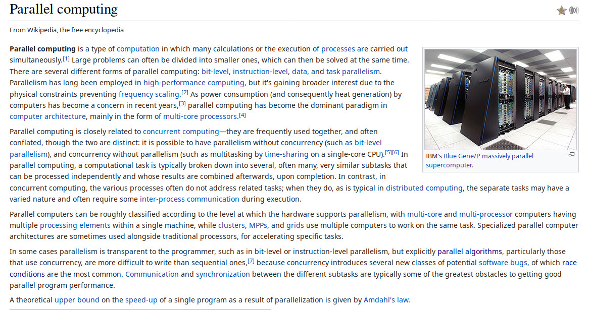
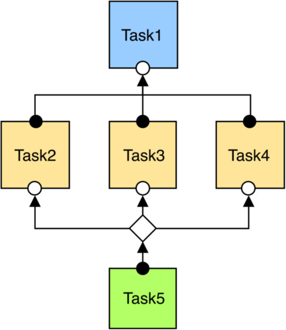
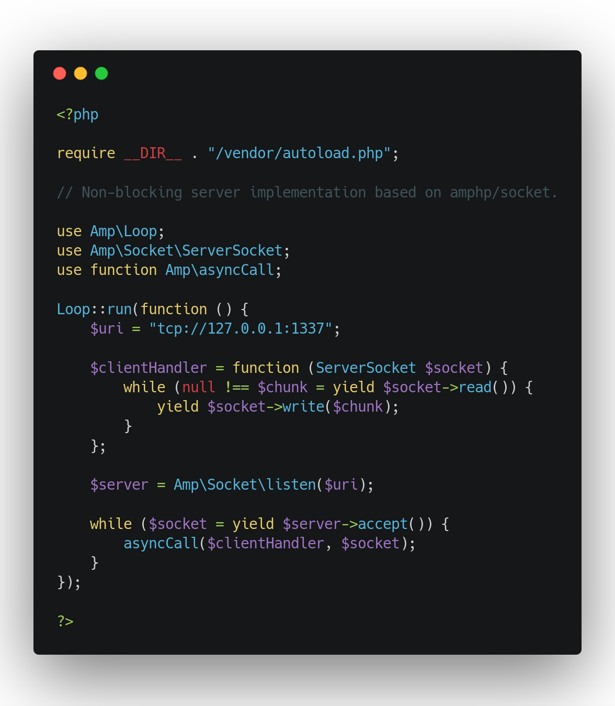
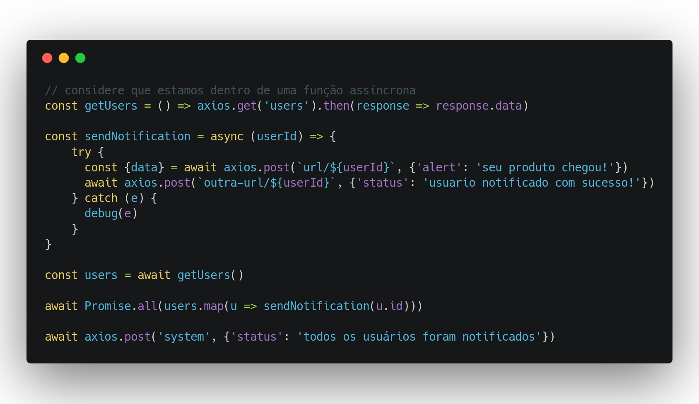
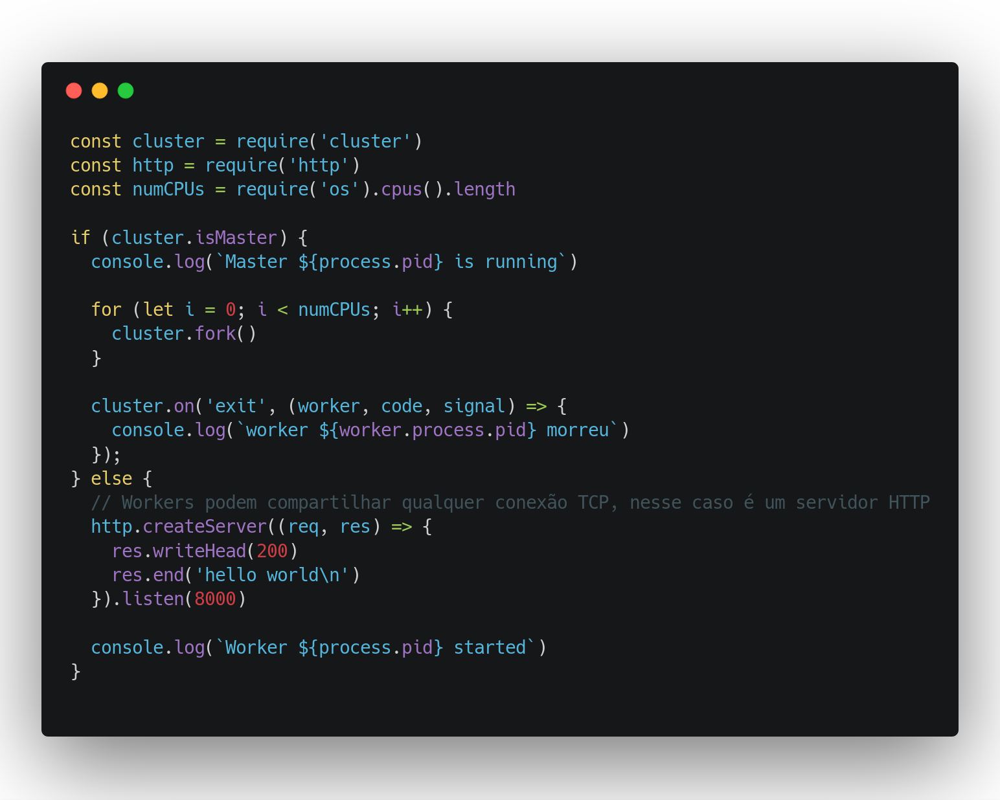
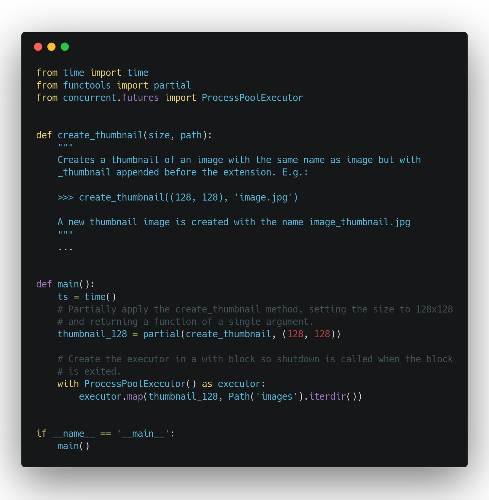
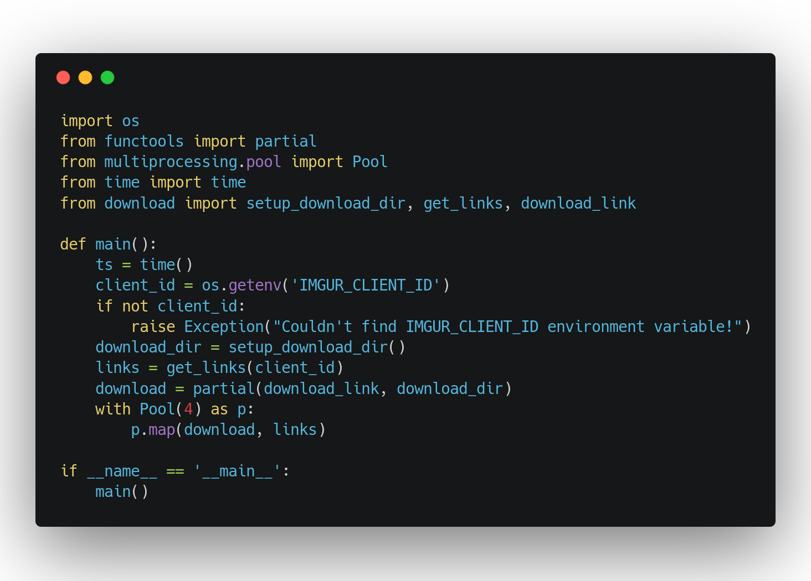

Paralelismo, Concorrência & Memes
Hernandes
Desenvolvedor Back-End
Co-Org @BackEndBrasil
@onhernades | hernandes.ioPor que falar de paralelismo e concorrência?

É um assunto fácil, mas a maioria do conteúdo é técnico demais e às vezes isso mais atrapalha do que ajuda
Era uma vez...

Isso é paralelismo. E funciona. E tem muito sistema no ar usando isso. Mas pode ter formas melhores

Entender memes NÃO é difícil!
minha história com o Choque de Cultura
Então o que realmente é paralelelismo isso aí?

É quando você executa a mesma operação em CPUs diferentes
paralelismo != multi threading
multi threading
e o que é concorrência?
Exemplos
Concorrência com PHP

Paralelismo com PHP + comandos shell
Concorrência com NodeJS

Paralelismo com NodeJS

Concorrência com Python

Paralelismo com Python

Pontos positivos:
- leitura de disco
- processamento de dados em massa(famosos workers)
- melhorar a performance no ponto de vista do usuário(experiência)
Pontos negativos:
- pode custar mais do que você gostaria
- desnecessário na maioria das vezes
- consome mais recursos e pode afetar outras coisas(efeitos colaterais)
agora você pode dizer que sabe sobre memes
e que também sabe sobre paralelismo & concorrência
~ extra
- leia mais sobre locking
- brinque com algumas coisas simples
- aplique no seu dia a dia com cuidado